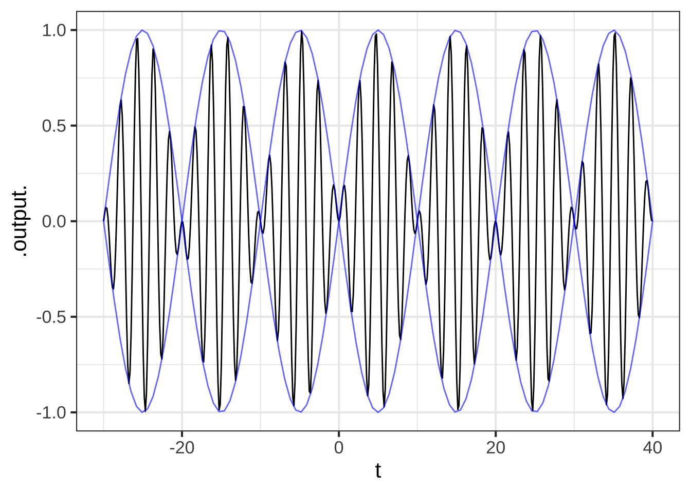
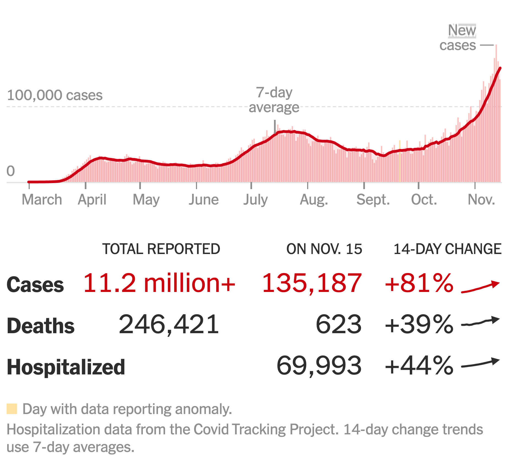

Chapter 24 Local approximations
We have focused in this book on a small set of basic modeling functions and three operations for assembling new functions out of old ones: linear combination, multiplication, and composition. All of these have a domain that is the whole number line, or the positive half of the number line, or perhaps the whole number line leaving out zero or some other isolated point. Consider such domains to be global.
We also discussed the components of piecewise functions. Each component is a function defined on a limited domain, and interval \(a \leq x \leq b\). In contrast to the global domains, we’ll call the limited domains local.
In this chapter, we’ll explore a simple and surprisingly powerful method to approximate any function locally, that is, over a small domain.
Why would you want to approximate a function? Why not just use the function itself?
It’s often the case—in some fields, usually the case—that we don’t have a functional form for a relationship. Instead we know about the relationship only through data. It’s possible that by deep introspection you or a colleague could construct a theory of the relationship that points to one of the basic modeling functions or a combination of them. Suppose you could? Then anyone else having your theory in mind could approximate your function locally using the methods in this chapter.
The utility of the methods is that you can skip the theoretical relationship and apply the methods directly to the data. Such a skip-the-theory approach is ubiquitous in all fields.
The information that you have about the relationship often takes the form of a data table. Each row shows records one trial in which the values of the inputs have been measured and the corresponding output value recorded. We’ll discuss the methods of constructing functions to match such data in Block 4 of this course.
Another common form for the information about the relationship is about derivatives. That is, you know something about the derivative of a relationship even though you don’t (yet) have a form for the function describing the relationship. As an example, think about building a model of the sustainable speed of a bicycle as a function of the gear selected and the grade of the road—up or down.
Consider these three questions that any experienced bicyclist can likely answer:
- On a given grade of road, is there an optimal gear for the highest sustained speed? (Have in mind a particular rider, perhaps yourself.)
- Imagine that the grade of the road is described by a positive number for uphill and a negative number for downhill: that is, the slope of the road. For a positive (uphill) grade and at a fixed gear, will the bike’s sustained speed be higher or lower as a function of the grade? (It’s much the same for downhill biking, but you have to keep in mind that a shallow downhill has a higher numerical slope than a steep downhill. That is, the derivative of the hill is near zero for a very shallow grade and far from zero (that is, more negative) for a steep downhill grade.
- Assuming you answered “yes” to question (1): Does the optimal gear choice depend on the grade of the road? (In concrete terms, would you choose different gears for an uphill climb than for a level road or a downhill stretch?)
Using the methods in this chapter, the answers to those three questions let you choose an appropriate form for the speed(gear, grade) function. Then, using methods in Block 3, you can make a few measurements for any given rider and construct a model customized to that rider.
Note that the three questions all have to do with derivatives. An “optimal gear” is a gear at which \(\partial_\text{gear} \text{speed}(\text{gear}, \text{grade}) = 0\). That you ride slower the higher the numerical value of the slope means that \(\partial_\text{grade} \text{speed}(\text{gear}, \text{grade}) < 0\). And we know that \(\partial_\text{gear} \text{speed}(\text{gear}, \text{grade})\) depends on the grade; that’s why there’s a different optimal gear at each grade.
24.1 Eight simple shapes
In many modeling situations with a single input, you can get very close to a good modeling function \(f(x)\) by selecting one of eight simple shapes. I’ve sketched these out and annotated them with their properties and examples of function forms that have that shape.
Straight-line functions
| sloping upward | sloping downward |
|---|---|
 |
 |
| not concave, slopes up, monotonic | not concave, slopes down, monotonic |
| \(a x + b\) | \(b - ax\) |
shallow then steep
| concave down | concave up |
|---|---|
 |
 |
| monotonic | monotonic |
| \(a - b e^{kx}\) | \(a + b e^{kx}\) |
steep then shallow
| concave down | concave up |
|---|---|
 |
 |
| monotonic | monotonic |
| \(\ln(x)\) | \(e^{-kx}\) |
| \(-1/x\) | \(1/x\) |
local extremum
| maximum | minimum |
|---|---|
 |
 |
| not monotonic | not monotonic |
| \(a x^2\) | \(-a x^2\) |
\(\hump(x)\) \(-\hump(x)\)
To choose among these shapes, consider your modeling context:
- is the relationship positive (slopes up) or negative (slopes down)
- is the relationship monotonic or not
- is the relationship concave up, concave down, or neither
For instance, in micro-economic theory there are production functions that describe how much of a good is produced at any given price, and demand functions that describe how much of the good will be purchased as a function of price.
As a rule, production increases with price and demand decreases with price. In the short term, production functions tend to be concave down, since it’s hard to squeeze increased production out of existing facilities. In the long term, production functions can be concave up as new businesses are established to meet demand.
For demand in the short term, functions will be concave up when there is some group of consumers who have no other choice than to buy the product. An example is the consumption of gasoline versus price: it’s hard in the short term to find another way to get to work. In the long term, consumption functions can be concave down as consumers find alternatives to the high-priced good. For example, high prices for gasoline may, in the long term, prompt a switch to more efficient cars, hybrids, or electric vehicles. This will push demand down steeply.
Cooling water or radio-activity as functions of time concave up and steep-then-shallow. The incidence of an out-of-control epidemic versus time is concave up, but shallow-then-steep. As the epidemic is brought under control, the decline is steep-then-shallow and concave up. Over the whole course of an epidemic, there is a maximum incidence. And experience shows that epidemics can have a phase where incidence reaches a local minimum: a decline as people practice social distancing followed by an increase as people become complacent.
How many minutes can you run as a function of speed? Concave down and shallow-then-steep; you wear out faster if you run at high speed. How far can you walk as a function of time? Steep-then-shallow and concave down; you’re pace slows as you get tired? How much fuel is consumed by an aircraft as a function of distance? For long flights the function is concave up and shallow-then-steep; fuel use increases with distance, but the amount of fuel you have to carry also increases with distance and heavy aircraft use more fuel per mile. How does the stew taste as a function of saltiness. The taste improves as the amount of salt increases … up to a point after which it’s downhill.
All these are examples of scenarios where the modeler knows about the derivative and concavity of the relationship being modeled. It’s often the case that your knowledge of the system comes in this form.
As you see, there are often multiple basic modeling functions that can be used to construct a model that follows the appropriate slope and curvature pattern. But we can simplify the choice as well as the algebra involved in building a model.
24.2 Low-order polynomial
There is a function form that can take on each of the eight forms, a second-order polynomial \(g(x)\) where \[g(x) \equiv a + b x + c x^2\] As you know, the graph of \(g(x)\) is a parabola.
- The parabola opens upward if \(0 < c\). That’s the shape of a local minimum.
- The parabola opens downward if \(c < 0\). That’s the shape of a local maximum
Consider what happens if \(c = 0\). The function becomes simply \(a + bx\), the straight-line function.
- When \(0 < b\) the line slopes upward.
- When \(b < 0\) the line slopes downward.
So the form \(a + bx + cx^2\) is easily capable of representing four of the eight simple shapes. What about the other four? You can see how this is done by looking at the graphs of the parabolas with \(0 < c\) and with \(c < 0\), as in Figure ??.
Figure 24.1: Four of the eight simple shapes correspond to the sides of the parabola.
Figure 24.2: Four of the eight simple shapes correspond to the sides of the parabola.
24.3 The low-order polynomial with two inputs
For functions with two inputs, the low-order polynomial approximation looks like this:
\[g(x, y) \equiv a_0 + a_x x + a_y y + a_{xy} x y + a_{yy} y^2 + a_{xx} x^2\] In reading this form, note the system being used to name the polynomial’s coefficients. First, we’ve used \(a\) as the root name of all the coefficients. Sometimes we might want to compare two or more low-order polynomials, so it’s convenient to be able to use \(a\) for one, \(b\) for another, and so on.
The subscripts on the coefficients describes exactly which term in the polynomial involves each coefficient. For instance, the \(a_{yy}\) coefficient applies to the \(y^2\) term, while \(a_x\) applies to the \(x\) term.
Each of \(a_0, a_x,\) \(a_y,\) \(a_{xy}, a_{yy}\), and \(a_{xx}\) will, in the final model, be a constant quantity. Don’t be confused by the use of \(x\) or \(y\) in the name that the coefficient is a function of the inputs. It’s always a constant, but you may not know exactly the value of that constant until later in in the process of modeling the setting of interest.
It helps to have different names for the various terms. It’s not too bad say something like, “the \(a_{xy}\) term.” (Pronounciation: “a sub x y”) But the proper names are: linear terms, quadratic terms, and interaction term. (And a shout out to \(a_0\), the constant term.)
\[g(x, y) \equiv a_0 + \underbrace{a_x x + a_y y}_\text{linear terms} \ \ \ + \underbrace{a_{xy} x y}_\text{interaction term} +\ \ \ \underbrace{a_{yy} y^2 + a_{xx} x^2}_\text{quadratic terms}\]
Figure 24.3: A saddle
Figure 24.3: A saddle
show_poly2(111)
show_poly2(112)
show_poly2(113)
show_poly2(115)
show_poly2(116)
show_poly2(120)
show_poly2(121)24.4 Derivatives of polynomials
Consider the function \(h(t) \equiv A e^{kt} + B\). This is a linear combination of two functions, which we can call \(f(t) \equiv e^{kt}\) and \(g(t) \equiv 1\).
Of course, \(f(t)\) and \(g(t)\) are basic modeling functions so we have memorized their derivatives: \(f'(t) = k e^{kt}\) and \(g'(t) = 0\).
Putting this together gives \[\partial_t h(t) = A\, k\, e^{kt} + B\times 0= A\, k\, e^{kt}\]
The derivative of a polynomial follows the linear combination rule. That’s because polynomials are a linear combination of monomials, \(x^0\), \(x^1\), \(x^2\), and so on.
The consequence is that the derivative of a polynomial is another polynomial, with each term being reduced by one order.
- \(\partial_x x^0 = 0\)
- \(\partial_x x^1 = x^0 = 1\)
- \(\partial_x x^2 = 2 x^1 = 2x\)
- and so on.
Example: \(f(x) \equiv a + b x + c x^2\ \ \implies\ \ \partial_x f(x) \equiv b + 2 c x\)
24.5 Approximations around \(x^\star\)
Starting with just the naked modeling functions (e.g. \(e^t\)), you have a small but rich set of mathematical operations that enables you to make a huge variety of functions to suit a big range of modeling needs:
- input scaling, which turns the naked modeling functions into the more directly useful basic modeling functions.
- linear combinations of functions, e.g. \(A + B e^{-kt}\)
- compositions of functions, e.g. \(e^{-kt^2}\) which you can recognize as the composition of an exponential with a power-law function.
- products of functions, e.g., \(\sin\left(\frac{2\pi}{P}x\right) e^{-kt}\)
Now we want to tame this profusion of possibilities and consider a way to construct stand-ins for any function, using a universal format that needs a minimum of information and can be used for many purposes in place of the original function. It’s helpful to have a name for the stand-ins that reminds us of whom they are stand-ins for. If the original function is \(f(x)\), we’ll write the names of the stand-ins with a tilde, as in \(\widetilde{\,f\ }(x)\).
The stand-in functions are intended to be much simpler than the original but useable as a substitute for the original. The catch is that the stand-in is warranteed to be a good substitute only within a small neighborhood of the domain of the origin.
The information we need to construct the stand-ins is very limited. First, we need to specify where the warranteed neighborhood is. We’ll tend to use \(x_0\) as identifying the center of that neighborhood. We’ll also need \(f(x_0)\), the output of the original function when the input is \(x_0\), and \(\partial_x f(x_0)\) and \(\partial_{xx} f(x_0)\).
This is a good time to remind you of the notation conventions that we are using to write about functions and evaluating functions.
A function with all its individual characteristics and idiosyncracies is written \(f(x)\): the function name and the name of the input or inputs. The name of this function is \(f()\). The name of the input to \(f()\) is \(x\), or whatever is the input name that was given in the parentheses following the name.
Every function has a derivative function. We could call that derivative function anything we like, but it’s sensible to give it a name that states explicitly where it comes from. We’re using \(\partial_x f(x)\) for this purpose. Similarly, the name we use for the second derivative is \(\partial_{xx} f(x)\).
Evaluating a function means to specify a particular value for the input. We use several ways of making it clear when we are talking about a particular value of the input, e.g. \[\mbox{function output:}\ \ \ f(x = 3)\ \ \ \text{or}\ \ f(3)\ \ \ \text{or}\ \ \left.f(x)\strut\right|_{x=3}\] The output of such an evaluated function is a quantity.
Sometimes we want to refer to the output for some particular input, but we don’t have that specific quantity pinned down yet. Our preferred style for writing this is to use a name that is similar to an input name, but which has a subscript as in \(x_0\), \(x_1\), \(x_i\), \(x_\star\) or, occasionally, a superscript as in \(x^\star\). The output of the function is then written like this: \[\mbox{function output:}\ \ \ f(x = x_0)\ \ \ \text{or}\ \ f(x_0)\ \ \ \text{or}\ \ \left.f(x)\strut\right|_{x=x_0}\] This same style applies when the function has a name like \(\partial_x f()\) or \(\partial_{xx} f()\), for instance
\[\mbox{function output:}\ \ \ \partial_x f(x = x_0)\ \ \ \text{or}\ \ \partial_x f(x_0)\ \ \ \text{or}\ \ \left.\partial_x f(x)\strut\right|_{x=x_0}\]
Here are two universal formats that can be used to construct a stand-in for any function near a particular input \(x_0\). Since it’s useful to have a name for the stand-in, we’ll use a tilde on top of the original function name:
- First-order approximation: \(\widetilde{f_1}(x) \equiv f(x_0) + \partial_x f(x_0) (x-x_0)\)
- Second-order approximation: \(\widetilde{f_2}(x) \equiv f(x_0) + \partial_x f(x_0) [x-x_0] + \frac{1}{2} \partial_{xx} f(x_0) [x - x_0]^2\)
Notice that the first two terms of \(\widetilde{f_2}(x)\) are identical to \(\widetilde{f_1}(x)\), so we could write the second-order approximation as \[\widetilde{f_2}(x) \equiv \widetilde{f_1}(x) +\frac{1}{2} \partial_{xx} f(x_0) [x-x_0]^2\]
The first-order approximation \(\widetilde{f_1}(x)\) is nothing more than the straight-line function whose graph is tangent to the graph of \(f(x)\) at the input \(x=x_0\).
The second-order approximation is a quadratic polynomial. Being quadratic, its graph is the familiar parabola. The graph of \(\widetilde{f_2}(x)\) is the parabola that is tangent to the graph of \(f(x)\).
Consider the function \(g(x)\) whose graph is shown in Figure ??.
## Warning: geom_vline(): Ignoring `mapping` because `xintercept` was provided.
## Warning: geom_vline(): Ignoring `mapping` because `xintercept` was provided. We haven’t given you a formula for \(g(x)\), but you can see that it isn’t any of the basic modeling functions but something more complicated. We’re going to construct a first-order and second-order approximation to \(g(x)\) in a neighborhood \(x_0 = -1\) as marked by the blue shaded area.
We haven’t given you a formula for \(g(x)\), but you can see that it isn’t any of the basic modeling functions but something more complicated. We’re going to construct a first-order and second-order approximation to \(g(x)\) in a neighborhood \(x_0 = -1\) as marked by the blue shaded area.
Note that \(x_0\) is not an argmin of \(g(x)\). You can see that the argmin is a little to the right of \(x_0\).
The “facts” about \(g(x)\) that are needed to construct the approximations, beyond the specification of the location of the neighborhood \(x_0\), are the values \(g(x_0)\), \(\partial_x g(x_0)\), and \(\partial_{xx} g(x_0)\). These are:
x0 <- -1
g(x0)## [1] -23.992dx_g <- D(g(x) ~ x)
dxx_g <- D(g(x) ~ x + x)
dx_g(x0)## [1] -2.3493dxx_g(x0)## [1] 7.8077With these facts, we can construct the first- and second-order approximations:
tilde1_g <- makeFun(-23.992 - 2.3493*(x-x0) ~ x)
tilde2_g <- makeFun(tilde1_g(x) + (7.8077/2) * (x-x0)^2 ~ x)Figure 24.4 shows \(\widetilde{g_1}(x)\) and \(\widetilde{g_2}(x)\), zooming in around \(x_0 = -1\).
## Warning: geom_vline(): Ignoring `mapping` because `xintercept` was provided.
## Warning: geom_vline(): Ignoring `mapping` because `xintercept` was provided.
Figure 24.4: The first-order (green) and second-order (red) approximations to \(g(x)\) near \(x_0=-1\).
You can see that \(\widetilde{g_2}(x)\) is a good approximation to \(g(x)\). In particular, the argmin of \(\widetilde{g_2}(x)\) is close to the that of \(g(x)\).
In a previous example, we showed that the argmin of the parabolic function \(a_0 + a_1 x + a_2 x^2\) is \(x^\star = -\frac{a_1}{2 a_2}\). Using that formula, the argmin of \(\widetilde{g_2}(x)\) is -2.3493/(7.8077/2) = -0.602.
24.6 Solving computationally
How to find the zeros of the derivative of a function and how to evaluate the second derivative at those zeros to find out what kind of critical point it is.
The cubic bifurcation. Start with a cubic with an argmax followed by an argmin. Then move the parameter to see the two critical points coalesce into a single point then disappear.
Or, maybe, “the problem with polynomials.” Linear function always has 1 root and no critical points. Quadratic function always has one critical point (and subject to a constant may have two roots generically). But a cubic might have 1 or 3 solutions and the behavior depends on the constant. It might have one or three critical points.
24.7 From an earlier draft
When facing a modeling problem, it’s nice to have a framework that provides a checklist approach:
- What is the output quantity and what input quantities are thought to have an important connection to the output?
- For each input in (1), what is a
An important framework for simple models involves A function form often employed in models is the low-order polynomial. In the usual situation, there is region of the domain which is of particular interest, with \(x_0\) being a point in that region. The approximating polynomial starts out as \[p(x) \equiv \frac{1}{2} a [x-x_0]^2 + b [x - x_0] + c\]
- \(f(x) = c\), the constant function, which is appropriate when the output of \(f()\) doesn’t depend on the input.
- \(f(x) = b x + c\), the straight-line function, which is the simplest form where the output depends on the input.
- \(f(x) = \frac{1}{2}a x^2 + b x + c\), the quadratic function, which is an appropriate form when there is some input \(x\) at which the output is a local maximum or minimum.
In many modeling situations, the construction of a model function can be reduced to a short series of questions:
- What is the approximate output when the input is fixed neighborhood of interest?
- Does the output increase monotonically or is there a maximum or minimum?
slice_plot((x+1)^0.5 ~ x, domain(x=c(0,1))) %>%
slice_plot(2*log(x+1) ~ x, color="red") %>%
slice_plot(.2*exp(x+1) ~ x, color="green") %>%
slice_plot(2*exp(-(x+1)) ~ x, color="orange") %>%
slice_plot(1/(x+2) ~ x, color="blue")
2 1.5, 1, .5, log(), -.5,
- [Deriv-5a] Understand strategy of looking at the behavior of function \(f(x)\) around a point \(x_0\) by considering a new, possibly simpler function in terms of \(x\).
- [Deriv-5b] Be able to construct a straight-line function (Linear Approximation) that approximates \(f(x)\) around \(x_0\)
- [Deriv-5c] Be able to construct a 2nd-order polynomial (Quadratic Approximation) whose value and derivatives at match those of a function
Example about modeling walking
There’s an exercise in DailyDigitals/ 141 DD-35 with some narrative
and the project is in DD-37
Harvest the shiny app materials in DailyDigital/daily-digital-38.Rmd.
Consider the model presented in class of energy expenditure walking distance \(d\) on a grade \(g\): \[E(d,g) = (a_0 + a_1 g)d\] where \(d\) is the (horizontal equivalent) of the distance walked and \(g\) is the grade of the slope (that is, rise over run).
We want \(E\) to be measured in Joules.
Question A What is the dimension of Joules?
- dimensionless ☹︎
- \(L/T^2\) ☹︎
- \(T/L^2\) ☹︎
- \(M/T^2\) ☹︎
- \(M L/T^2\) ☹︎
- \(M/L^2\) ☹︎
- \(M/(L^2 T^2)\) ☹︎
- \(M L^2 / T^2\) ✓
Question B What is the dimension of the parameter \(a_0\)?
- dimensionless ☹︎
- \(L/T^2\) ☹︎
- \(T/L^2\) ☹︎
- \(M/T^2\) ☹︎
- \(M L/T^2\) ✓
- \(M/L^2\) ☹︎
- \(M/(L^2 T^2)\) ☹︎
- \(M L^2 / T^2\) ☹︎
Question C What is the dimension of \(g\)?
- dimensionless ✓
- \(L/T^2\) ☹︎
- \(T/L^2\) ☹︎
- \(M/T^2\) ☹︎
- \(M L/T^2\) ☹︎
- \(M/L^2\) ☹︎
- \(M/(L^2 T^2)\) ☹︎
- \(M L^2 / T^2\) ☹︎
Question D What is the dimension of the parameter \(a_1\)?
- dimensionless ☹︎
- \(L/T^2\) ☹︎
- \(T/L^2\) ☹︎
- \(M/T^2\) ☹︎
- \(M L/T^2\) ✓
- \(M/L^2\) ☹︎
- \(M/(L^2 T^2)\) ☹︎
- \(M L^2 / T^2\) ☹︎
Suppose we describe the spread of an infection in terms of three variables:
- \(N\) infection rate with respect to time: the number of new infections per day
- \(I\) the current number of people who are infectious, that is, currently capable of spreading the infection
- \(S\) the number of people who are susceptible, that is, currently capable of becoming infectious if exposed to the infection.
All three of these variables are functions of time. News reports in 2020 routinely such as the one below gave the graph of \(N\) versus time for Covid-19.

On November 15, 2020, \(N\) was 135,187 people per day. (This is the number positive tests. The true value of \(N\) is 5-10 times greater.) The news reports don’t usually report \(S\) on a day-by-day basis.
But a basic strategy in modeling with calculus is to take a snapshot: Given \(I\) and \(S\) today, what is a model of \(N\) for today. (Next semester, we’ll study “differential equations,” which provide a way of assembling from the snapshot model what the time course of the pandemic will look like.)
The low-order polynomial for \(N(S, I)\) is \[N(S,I) = a_0 + a_1 S + a_2 I + a_{12} I S.\] We don’t include quadratic terms because there is no local maximum in \(N(S, I)\)—common sense suggests that \(\partial_S N() \geq 0\) and \(\partial_I N() \geq 0\), whereas a local maximum requires at least one of these derivatives to be negative near the max.
Your job is to figure out which, if any, terms can be safely deleted from the low-order polynomial. A good way to approach this is to figure out, using common sense, what \(N\) would be for either \(S=0\) or \(I=0\). (Note that the previous is not restricted to \(S = I = 0\). Only one of them needs to be zero to produce the relevant result.)
Question A Which of these is a sufficiently complete low-order polynomial given the behavior of \(N\) at \(S=0\) or \(I=0\)?
- \(N(S,I) = a_0 + a_1 S + a_2 I + a_{12} I S\) ☹︎ We don’t need all four terms. Think about it!
- \(N(S,I) = a_0 + a_1 S + a_2 I\) ☹︎ When both \(S\) and \(I\) are zero, \(N\) would be non-zero.
- \(N(S,I) = a_1 S + a_2 I + a_{12} I S\) ☹︎
- \(N(S,I) = a_2 I + a_{12} I S\) ☹︎
- \(N(S,I) = a_1 S + a_{12} I S\) ☹︎
- \(N(S,I) = a_{12} I S\) ✓
- \(N(S,I) = a_1 S + a_2 I\) ☹︎
It often happens in decision making that there are multiple criteria. For instance, in selecting cadets for pilot training, two obvious criteria are the cadet’s demonstrated flying aptitude and the leadership potential of the cadet. Let’s assume that the merit \(M\) of a candidate is a function of flying aptitude \(F\) and leadership potential \(L\). A simple model of decision making is that the candidates are ordered from highest \(M\) to lowest. Then, depending on how many pilot trainees are required, a threshold is set for \(M\) and candidates with \(M\) greater than the threshold are accepted.
You’ve been tasked to develop a formula for use in the pilot-training selection process.
A low-order polynomial model is \[M(F, L) = d_0 + d_1 F + d_2 L + d_{12} F L ,\] where both \(d_1\) and \(d_2\) are positive. (Think for a minute about why the coefficients must be positive to make sense as a way of combining \(F\) and \(L\) into a measure of merit.)
You are trying to decide whether \(d_{12}\) should be positive, negative, or zero. To guide your decision, you have only this statement from the general in charge of the program: “I would rather have an good pilot who is a good leader than have a great pilot who is a poor leader or a poor pilot who is a great leader.” (You might reasonably agree or disagree with this point of view, but remember who is commanding whom.)
Take a few minutes now to think about how you would decide whether \(d_{12}\) should be positive or negative or zero to implement the general’s view. The rest of the problem will guide you to a solution, but you’ll understand better if you try on your own, first.
Using the low-order polynomial model, find algebraically these two partial derivatives
- \(\partial_F M(F, L)\) and
- \(\partial_L M(F, L)\)
Question A Which of these possibilities is true about \(\partial_F M\) as a function of \(F\)?
- Increases with F ☹︎
- Decreases with F ☹︎
- Is not a function of F. ✓
Question B Which of these possibilities is true about \(\partial_L M\) as a function of \(L\)?
- Increasing ☹︎
- Decreasing ☹︎
- Is not a function of L. ✓
Question C Which one of these describes the relationship between \(\partial_F M()\) as a function of \(L\) and \(\partial_L M()\) as a function of \(F\)? (Hint: Remember that \(d_1\) and \(d_2\) are specified as being positive.)
- If \(\partial_F M()\) is an increasing function of \(L\), then \(\partial_L M()\) must be a decreasing function of \(F\). ☹︎ Notice that both partials involve the same \(d_{12}\) coefficient.
- If \(\partial_F M()\) is an increasing function of \(L\), then \(\partial_L M()\) must be an increasing function of \(F\). ✓
- Neither of the above needs to be true. ☹︎ Notice that both partials involve the same \(d_{12}\) coefficient.
Think now about the general’s statement and how to translate it into mathematical terms. Here’s a hint: Imagine Drew has very high \(F\) score and low \(L\) score. Consider another cadet, Blake, with scores \(F-\epsilon\) and \(L + \epsilon\). Blake’s flying and leadership scores are closer together than Drew’s. Both Drew and Blake have exactly the same average of \(F\) and \(L\). But would the general find Blake superior or inferior to Drew? If superior, then you would want \(\partial_L M > \partial_F M\). If inferior, then your model should have \(\partial_L M < \partial_F M\). If the general would be indifferent between Drew and Blake, then the two partial derivatives should be equal.
Question D Based on the general’s statement, do you want \(d_{12}\) to be positive, negative, or zero?
- Positive ✓
- Zero ☹︎
- Negative ☹︎
- It has nothing to do with the general’s statement. ☹︎
In this exercise, you’re going to be looking at the shape of contour lines very close to a reference point. The graph shows which function we’ll be examining. The contours are unlabeled, to avoid distracting you with numbers; we’re interested in shapes. Four different reference points are marked, with these coordinates
| label | x0 | y0 |
|---|---|---|
| A | -2.100 | 3.000 |
| B | -0.400 | 2.500 |
| C | -1.605 | 1.932 |
| D | 1.265 | -2.725 |

For each of the reference points A to D, your job is to zoom in on the region around that point. The graphing expression in the sandbox has been written in a way that allows you to specify exactly the coordinates of the reference point, and the size of the region around that reference point being plotted. The initial example in the sandbox is for reference point A and a region size of 0.5. The reference point will always be exactly in the center of the plot.
You are to consider the sequence of region sizes
\[\mbox{size}: 0.5,\ 0.1,\ 0.05,\ 0.01,\ 0.005,\ 0.001,\ 0.0005,\ 0.0001\]
Start at the largest size and try successively smaller sizes until you find a size where the shape of the contour lines is simple and very similar to the shape from the previous size. (Ignore the contour labels: just look at the shape.)
x0 <- -2.100
y0 <- 3.000
size <- 1.0
contour_plot(g(x, y) ~ x + y,
domain(x = x0 + size*c(-1, 1),
y = y0 + size*c(-1, 1)))
Question A 1a) For reference point A how small should size be so that the shape of the contours does not differ substantially from the shape at the previous size.
0.1 ☹︎ 0.01 ✓ 0.001 ☹︎ 1e-04 ☹︎
Question B 1b) For reference point A which phrase best describes the shape of the contours at the size you found in question (1a).
- contours are straight and almost exactly parallel and evenly spaced ✓
- contours are straight, almost exactly parallel, but unevenly spaced. ☹︎
- contours are straight, but fan out a bit ☹︎
- contours are curved but concentric and evenly spaced ☹︎
- contours are curved and concentric, but unevenly spaced. ☹︎
Question C 2a) For reference point B how small should size be so that the shape of the contours does not differ substantially from the shape at the previous size.
0.1 ☹︎ 0.01 ✓ 0.001 ☹︎ 1e-04 ☹︎
Question D 2b) For reference point B which phrase best describes the shape of the contours at the size you found in question (2a).
- contours are straight and almost exactly parallel and evenly spaced ✓
- contours are straight, almost exactly parallel, but unevenly spaced. ☹︎
- contours are straight, but fan out a bit ☹︎
- contours are curved but concentric and evenly spaced ☹︎
- contours are curved and concentric, but unevenly spaced. ☹︎
Question E 3a) For reference point C how small should size be so that the shape of the contours does not differ substantially from the shape at the previous size.
0.1 ☹︎ 0.01 ☹︎ 0.001 ✓ 1e-04 ☹︎
Question F 3b) For reference point C which phrase best describes the shape of the contours at the size you found in question (3a).
- contours are straight and almost exactly parallel and evenly spaced ✓
- contours are straight, almost exactly parallel, but unevenly spaced. ☹︎
- contours are straight, but fan out a bit ☹︎
- contours are curved but concentric and evenly spaced ☹︎
- contours are curved and concentric, but unevenly spaced. ☹︎
Question G 4a) For reference point D how small should size be so that the shape of the contours does not differ substantially from the shape at the previous size.
0.1 ☹︎ 0.01 ☹︎ 0.001 ☹︎ 0.0001 ✓
Question H 4b) For reference point D which phrase best describes the shape of the contours at the size you found in question (4a).
- contours are straight and almost exactly parallel and evenly spaced ✓ Almost always, if you zoom in enough, the contours will be straight, almost parallel, and evenly spaced. The exceptions are if the reference point is exactly at a local maximum or minimum (point C is very close, but not exactly on the maximum) or exactly at a saddle point (point D is very close, but not exactly on the saddle point).
- contours are straight, almost exactly parallel, but unevenly spaced. ☹︎
- contours are straight, but fan out a bit ☹︎
- contours are curved but concentric and evenly spaced ☹︎
- contours are curved and concentric, but unevenly spaced. ☹︎
Consider the road descent summarized by this sign …

The “grade” of road is defined to be rise-over-run. Since both rise and run have dimension \(L\), the ratio is dimensionless. The grade in percent is 100 times rise-over-run. A 100% grade corresponds to a \(45^\circ\) angle.
Question A Taking the “run” to be the 5 miles indicated on the sign, what’s the “rise?” (You can find unit conversion data on the internet.)
- 0.91 miles ☹︎ Close, but 18% times 5 miles is 0.9 miles.
- 4752 feet ✓
- 1.5 km ☹︎ This is 0.932 miles.
- 292 rods ☹︎ This is 0.9125 miles.
- 7.36 furlongs ☹︎ This is 0.92 miles.
- 22.64 \(\sqrt{\mbox{acre}}\) ☹︎ A square-root of an acre is an unconventional unit for length. One acre is 43560 ft\(^2\), so the square root of an acre is 208.71 feet or 0.03953 miles. So 22.64 \(\sqrt{\mbox{acre}}\) is 0.895 miles.
Since a vehicle’s odometer measures distance along the road surface rather than along the horizontal “run,” it’s likely that the sign-makers had in mind 5 miles being the length of the hypotenuse of the triangle rather than the horizontal leg.
Question B Which of these expressions gives the horizontal run for a rise of \(y\) miles?
- \(\sqrt{5 - y^2}\) ☹︎
- \(\sqrt{25 - y^2}\) ✓
- \(\sqrt{y^2 + 25}\) ☹︎
- \(\sqrt{y^2+5}\) ☹︎
Question C Given that the grade is 18% and that the length of the road surface is 5 miles, what is the “rise?”
- 0.85 miles ☹︎
- 1.40 km ☹︎
- 283.5 rods ✓
- 6.8 furlongs ☹︎
- 22.01 \(\sqrt{\mbox{acre}}\) ☹︎